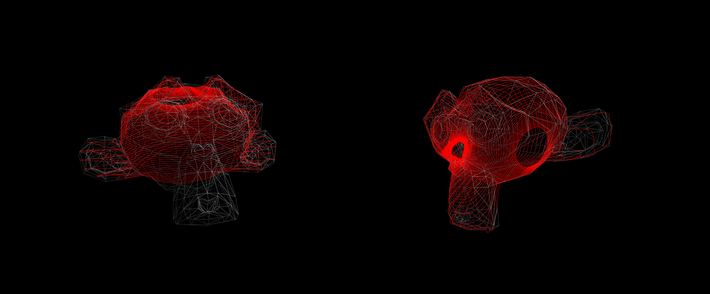

January 2016
ORIGINS OF THE IDEA
When I was working at Firstborn, in NYC, I started to do some R&D to find some way to draw lines around a 3D model, to animate them, and… Well, that’s the fun part of R&D: and let’s see what we will do with it :)
But I never really had the time to push it forward... Until december 2015 with a new year of Christmas Experiments!
I’m a big fan of painting and digital stuff, and I love to create something that mix those stuff together. (You can see my previous Christmas Experiment, in collaboration with filsdegraphiste that brings painting in digital world: Northpole)
So when I was thinking about what I could do with 3D lines, it was kinda obvious I was going to play with 3D brushes.
Only issue: I can’t create a 3D model on my own, and I don’t have the knowledge to modify a 3D model. So I used the same deer that Makio used on Journey, coming from RO.ME.
I’m a big fan of painting and digital stuff, and I love to create something that mix those stuff together. (You can see my previous Christmas Experiment, in collaboration with filsdegraphiste that brings painting in digital world: Northpole)
So when I was thinking about what I could do with 3D lines, it was kinda obvious I was going to play with 3D brushes.
Only issue: I can’t create a 3D model on my own, and I don’t have the knowledge to modify a 3D model. So I used the same deer that Makio used on Journey, coming from RO.ME.
(Main) Techs Used:
- ES6
- MeshLines
- ThreeJS (v74dev)
LINES
I created a small tool, that raycast from a point to the center of my model. When there is an intersection, I create a new point on the line.
I created a second one, that allows me to click on my model, and to add points manually. The idea behind this tool was to have some path more “natural”, “artistic” or made by hand. Less “robotic”, in a way.
At this point, I realized the paths generated from those 2 tools were not really smooth... And I wanted to add more details on them.
THREEJS comes with some handy tools to solve that issue. I used

THREEJS comes with some handy tools to solve that issue. I used
THREE.CatmullRomCurve3 which allows me to add some points between all the vertices I created, and to make sure the line will be curved.
const spline = new THREE.CatmullRomCurve3( this._geo )
// * 6 => increase this number to add more points, decrease to have less points
this._pointsComputed = spline.getPoints( this._geo.length * 6 )
this._geo = new THREE.Geometry()
this._geo.vertices = this._pointsComputed
I think, the combination of both gives quite a nice natural feeling in the end.
Z-order
As I want to simulate real brushes, I have to create some strokes, with transparency. And when you play with transparency in ThreeJS, problems are coming to you. Here, my z-order got kinda fucked in ThreeJS when you play with transparency.
Because of the solution I used, I can sum the position of the differents vertices, cache this value, and use it to find the distance with the current camera position.
In the end, it’s definetly not perfect. But it works quite well for what I wanted!
Cheap and easy solution.
Because of the solution I used, I can sum the position of the differents vertices, cache this value, and use it to find the distance with the current camera position.
In the end, it’s definetly not perfect. But it works quite well for what I wanted!
Cheap and easy solution.
update() {
this._posCam.setFromMatrixPosition( three.camera.matrixWorld )
let obj = null
let objs = []
let i = this._count
while( --i > -1 ) {
obj = this._objs[ i ]
obj.__dist = this._posCam.distanceTo( obj.posAverage )
objs.push( obj )
}
objs.sort( this._compareDist )
this._updateDepths( objs )
}
_updateDepths( objs ) {
let i = objs.length
while( --i > -1 ) {
objs[ i ].setRenderOrder( i )
}
}
_compareDist( a, b ) {
if( a.__dist > b.__dist ) {
return -1
} else {
return 1
}
return -1
}
The renderOrder method:
setRenderOrder( value ) {
let i = this._lines.length
while( --i > -1 ) {
this._lines[ i ].mesh.renderOrder = value
}
}
Line animation & MeshLines
There are multiple ways to animate the line.
My first approach was to make the vertices move. So, each frame, I was changing there position. When you use MeshLines (from TheSpite), changing the position of the vertices means setting again the geometry. It involves a lot of calculation, and the performances suffer.
So this first try was not a success... Haha.
So after talking with Makio, I decided to switch: as my vertices don’t need to move (My line will always be the same, as it comes from my tools), I can create the geometry once for all, and make the texture move (and so... texture's UV) instead.
My first approach was to make the vertices move. So, each frame, I was changing there position. When you use MeshLines (from TheSpite), changing the position of the vertices means setting again the geometry. It involves a lot of calculation, and the performances suffer.
So this first try was not a success... Haha.
So after talking with Makio, I decided to switch: as my vertices don’t need to move (My line will always be the same, as it comes from my tools), I can create the geometry once for all, and make the texture move (and so... texture's UV) instead.
vUV = uv;
vUV.x = cos( time + vUV.x );
vUV.x = smoothstep( 0., 1., vUV.x );
The result was here: nice animation and good performances too! Quite happy with this change.
Mobile, iPad
Because everything runs via shaders, the experiment run quite fast on mobile, and very fast on tablet!
Only issue here: I decided at one point to use
Keep it in mind, it’s just one line of code to change, and your project will run normaly, without artefacts, and fast.
Only issue here: I decided at one point to use
mediump float instead of highp float… Bad idea. Desktop was running fine without highhp float... But you definetly need highp float for mobile & tablet!Keep it in mind, it’s just one line of code to change, and your project will run normaly, without artefacts, and fast.
Final touch
I wanted to add some final elements that were going to make the whole experiment more enjoyable.
I choose to do 2 things:
- To work on the background. I went back to my tools, and tried to map some line on a big sphere.
I then exported them to my project, and got some nice animated brushes behind the deer.
 - To work on the general atmosphere, by adding some particles (3 differents kind of particles).
- To work on the general atmosphere, by adding some particles (3 differents kind of particles).
I choose to do 2 things:
- To work on the background. I went back to my tools, and tried to map some line on a big sphere.
I then exported them to my project, and got some nice animated brushes behind the deer.

I think it's time to say goodbye...! If you have any feedbacks about this article, the way it's written, the informations shared, or anything... Feel free to share them with me :)